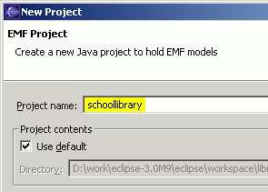
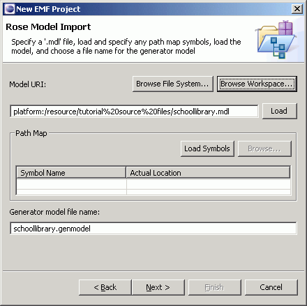
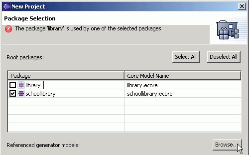
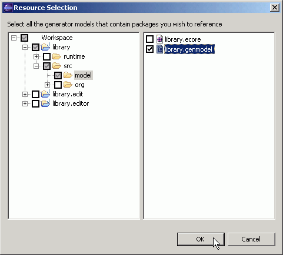
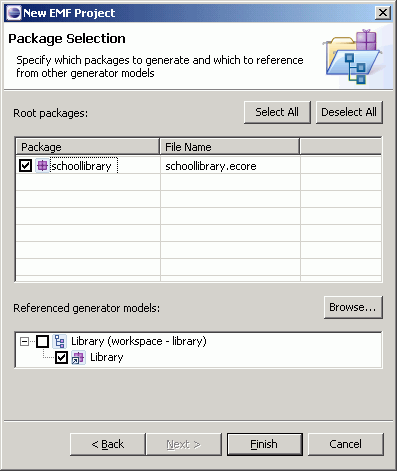
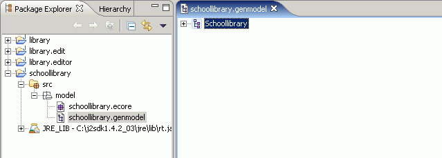
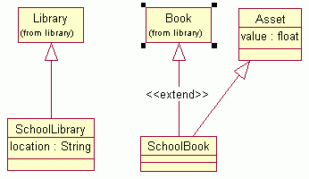

Last updated: May 31, 2006
This tutorial is a follow-on to Generating an EMF Model, in which a simple library model is generated. In that tutorial, we showed how an EMF model can be generated very easily from a Rose model or a set of Java interface files. In this tutorial, we will show you how to generate an EMF model that extends an existing model.
First of all, let us look back at the library model:

We are now going to extend this library model by creating a new package, schoollibrary. This package contains three classes, two of which extend classes in the library model:
This tutorial will show you step-by-step how to generate an EMF model of this schoollibrary package, using the library model that you've already created. As in the previous tutorial, we will demonstrate creating this new model from a Rose model and from a set of Java interfaces.
The screenshots are based on version 3.2.0 RC6 of the Eclipse SDK and version 2.2.0 RC6a of EMF.
| Step 1: | Import the Model from Rose or Define the Model Using Annotated Java |
| Step 2: | Generate the EMF Model and Editor Code |
| Step 3: | Run the Generated Editor |
| Step 4: | Modify the Editor |
| Appendix: | An Alternative Way to Generate the Model |
The library model and editor were generated in the previous tutorial, Generating an EMF Model.
If these packages are not listed, you will need to work through the previous tutorial, or see the Appendix for how to create both models at once.
Save the Rose model file schoollibrary.mdl somewhere on your workstation. It contains both the library and schoollibrary packages.
When sharing packages among various models, we really should place each
package in its own .cat file, and just reference them in an .mdl file. However,
for the purposes of this tutorial, we have simply duplicated and extended the
library package in a single model file. The generator behaves exactly the same,
whether packages are contained inside a single .mdl file or referenced in
external .cat files.
Create a new EMF project in the workspace:
Here are the annotated Java interfaces for the schoollibrary package. We can generate the EMF model from these interface files, instead of a Rose model.
SchoolLibrary.java
package org.eclipse.example.schoollibrary; import org.eclipse.example.library.Library; /** * @model */ public interface SchoolLibrary extends Library { /** * @model */ String getLocation(); }
Asset.java
package org.eclipse.example.schoollibrary; /** * @model */ public interface Asset { /** * @model */ float getValue(); }
SchoolBook.java
package org.eclipse.example.schoollibrary; import org.eclipse.example.library.Book; /** * @model */ public interface SchoolBook extends Book, Asset { }
Create a new empty EMF project in the workspace:

Add a plug-in dependency on the existing library project:
You could create and type in the interfaces as in the previous tutorial, but instead, we will show here how to import them from the zip file schoollibrary.zip. Save this file somewhere on your workstation, or in an otherwise empty project in your workspace.
Create the EMF model:


The generator model shows a root object, representing the whole model. This model object's children represent the packages in the model.
The code should be compiled automatically as it is generated, and should recompile whenever it is changed. If you have disabled automatic building in the workbench preferences, do not forget to rebuild the code whenever it changes.
In order to test the new plug-ins, a second instance of Eclipse must be launched. The plug-ins will run in this workbench.


The Schoollibrary Model wizard can now be used to create a new instance of the model.

The root object in this editor corresponds to the My.schoollibrary resource. Note that the object beneath it is indeed a school library.
Quit the second instance of Eclipse, returning to original, development workbench.
This part of the tutorial will show how to modify the code that gets generated. We'll just change a label in the generated editor, but we'll do it in a few different, illustrative ways.
First, we'll make a change in the generator model, which will affect the code that gets generated.
The following table summarizes the files that are generated by the "Generate Model Code", "Generate Edit Code", "Generate Editor Code", and "Generate Tests Code" menu items in the context-sensitive menus of different objects. The "Generate All" menu item is equivalent to selecting all three menu items.
| Generate Model Code | Generate Edit Code | Generate Editor Code | Generate Tests Code | |
| Model <M> |
MANIFEST.MF build.properties plugin.properties plugin.xml <M>Plugin.java * ...plus the files for each package |
MANIFEST.MF build.properties plugin.properties plugin.xml <M>EditPlugin.java ...plus the files for each package |
MANIFEST.MF build.properties plugin.properties plugin.xml <M>EditorPlugin.java <M>EditorAdvisor.java * ...plus the files for each package |
MANIFEST.MF build.properties plugin.properties plugin.xml <M>AllTests.java ...plus the files for each package |
| Package <P> |
<P>Package.java <P>PackageImpl.java <P>Factory.java <P>FactoryImpl.java <P>Switch.java <P>AdaptorFactory.java <P>ResourceImpl.java * <P>ResourceFactoryImpl.java * <P>Validator.java * <P>XMLProcessor.java * ...plus the files for each class and enum and for the model |
<P>ItemProviderAdaptorFactory.java ...plus the files for each class and for the model |
<P>Editor.java <P>ModelWizard.java <P>ActionBarContributor.java ...plus the files for the model |
<P>Tests.java <P>Example.java ...plus the files for each class and for the model |
| Class <C> |
<C>.java <C>Impl.java ...plus the files for the package |
<C>ItemProvider.java ...plus the files for the package |
<C>Test.java ...plus the files for the package |
|
| Enum <E> |
<E>.java ...plus the files for the package |
* These files are not generated by default.
Now, we can test our change.
Suppose now that you don't like the prefix "School Library" in the label and want to get rid of it. The only way to do this is to edit the code, but it is an easy change to make.
As described in the EMF.Edit Framework Overview, EMF.Edit uses item providers to, among other things, determine what label to display for a given type of object. In particular, it is the getText() method that does this, and that we'll need to change.
We have changed the implementation of getText() from what was originally generated. The label feature property on the SchoolLibrary class in the generator model no longer has any effect on the generated code. This is because we have removed the @generated Javadoc tag, preventing this method from being overwritten during code generation.
Now suppose that you have not yet decided whether the editor should display the value of the location attribute or of the name attribute. Instead, you want to be able to change it via the generator model later. However, you know that you don't want the "School Library" prefix to be displayed. Essentially, you would like to keep the generated implementation available to be used by a hand-coded method that removes the prefix from whatever it returns. The new method must be called "getText()", so the generated method must be renamed.
Fortunately, the EMF code generator supports this: when a method it is going to generate would conflict with a method that does not have an @generated tag, it looks for a method with the same name plus the suffix "Gen". If the method exists and is tagged with "@generated", the implementation will be generated into this method, instead.
You can go back to the generator model, change the label feature property, regenerate the code, and verify that that does indeed affect the generated code.
If you do not already have the base library model its editor generated in separate projects, you can generate both the library and school library models into the same set of projects in a single step. This can be done either from the Rose model or the set of annotated Java interfaces.
Starting with the Rose model, the process is the same as described above, except that both packages are selected for code generation.
Starting with annotated Java interfaces, both packages are imported into a single empty EMF project before any code generation is done.
When you launch the run-time workspace to test the new editor, you may notice one small difference in the editor for the library model, as compared to when we generated it separately from the schoollibrary model.
Notice that there are three types of children available, whereas in the previous tutorial, there were only two. Specifically, "School Book", which comes from the schoollibrary package, is included. Previously, the code generator was not aware of it when generating the item provider for Library. Now, since the two packages were generated together, the base package knows all about the package that extends it.